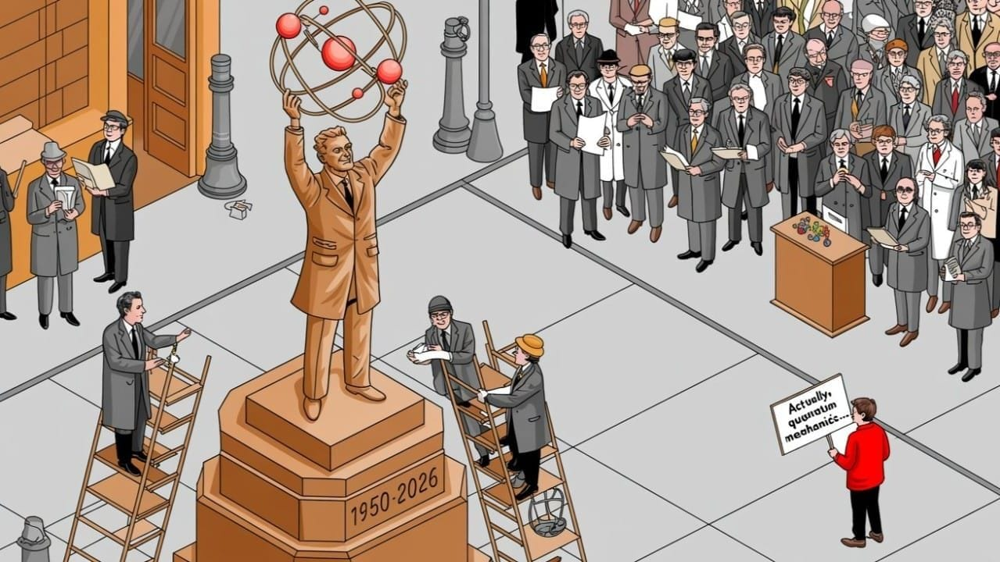

The Cost of Being Right
Wrong beliefs don't survive because the evidence is hidden. They survive because they're embedded in economies, careers, and identities that resist correction. From MBTI's AI-powered metastasis to psychiatry's overdue reckoning, here's the machinery that keeps us confidently wrong.


"A new scientific truth does not triumph by convincing its opponents and making them see the light, but rather because its opponents eventually die, and a new generation grows up that is familiar with it."
— Max Planck, Scientific Autobiography (1949)

The Correction Is Always Decades Late
Wrong beliefs don't die when the evidence kills them. They die when defending them costs more than abandoning them...
Being wrong is not a failure of intelligence, it's the only mechanism by which intelligence advances. And yet we've built entire institutions, economies, careers, and cultural identities around the assumption that we're right. These structures don't just resist correction, they fight it with a ferocity that has almost nothing to do with the evidence itself.
MBTIMyers-Briggs Type Indicator. ~50% get a different result on retest. Now in AI behavioral typing, TikTok identity culture, corporate talent platforms. The essay's most instructive case: a psychometrically invalid tool that metastasized instead of dying.In the Lexicon →You've probably seen the typical framing: Pluto, eye color genetics, MBTI, stomach ulcers, dinosaur pigmentation, the indivisibility of atoms—all trotted out as inspiring examples of science self-correcting. It's a comfortable story. It's also misleading. These corrections weren't clean, inevitable, or particularly virtuous. Each was contested, delayed, and in several cases, still hasn't been fully absorbed by the populations who learned the original wrong version.
1991 mBarrick and Mount's 1991 meta-analysis established conscientiousness as a robust predictor of job performance across occupationsThe real question isn't whether we got it wrong, obviously we did and that ship sailed, a while back. It's the, why does it take so long? What structural forces extend the lifespan of wrong beliefs long past the point when the evidence has already killed them?
In 2026, there's a new wrinkle. The machinery that produces, propagates, and entrenches wrong beliefs has been turbocharged by generative AI. The scientific literature itself, the correction mechanism, is getting flooded with AI-generated papers at industrial scale. Some researchers are calling it the largest science crisis of all time. We'll come back to this.
The Difference Between Being Wrong and Staying Wrong
300 mThe 2015 Dietary Guidelines were the first to eliminate the 300 mg/day cholesterol capThere's a distinction here that popular science writing tends to gloss over. Getting something wrong initially? That's largely unavoidable. You're working with incomplete information, limited instruments, a model calibrated to whatever data you have at the time. Pluto was called a planet because the concept of a "cleared orbital neighborhood" hadn't yet been operationalized as a definitional criterion. That's not ignorance, it's just a model doing what models do: approximating reality with whatever tools are available.
Staying wrong, though? That's a different problem. That's when a belief persists after the corrective evidence exists, not because the evidence is hidden, but because the belief has been embedded in textbooks, training curricula, professional identity, social consensus. Take the Mendelian single-gene model of eye color. This was a pedagogical simplification that outlasted its utility by decades. Genome project researchers knew it was wrong. The genetics community knew it was wrong. High school biology classrooms kept teaching it anyway, because the machinery of education isn't optimized for accuracy—it's optimized for consistency and ease of delivery.
Wrong beliefs persist not despite institutions but because of them. The institution that first propagated the belief has a structural incentive to defend it. Not conspiracy, just bureaucratic inertia combined with basic sunk cost psychology.
The MBTI Problem Has Gotten Worse, Not Better
Myers-Briggs was the most instructive case when I first wrote about this. I argued its persistence had nothing to do with scientific illiteracy, however, it persisted because it was useful in a non-empirical sense. HR departments got cover, teams got shared vocabulary, individuals got entirely positive self-narratives.
I wrote that in 2024. It is now May 2026. Survey says...
50%The instrument was already psychometrically indefensible—roughly 50% of test-takers get a different four-letter result when retested…MBTI hasn't declined. It has metastasized. The instrument was already psychometrically indefensible—roughly 50% of test-takers get a different four-letter result when retested within weeks. Now, it's become a full-blown cultural identity framework with billions of views on TikTok and Instagram. Brands design product lines tailored to MBTI types. AI companies build platforms claiming to detect your type from speech patterns, meeting participation, interaction style in real time. One company, Ulla, markets "dynamic personality awareness" that maps MBTI types from behavioral data, not self-assessment, as if the problem with MBTI was the questionnaire rather than the underlying construct.
Here's what's actually happening: the market is using AI to make a psychometrically invalid framework more technologically sophisticated. It feels more scientific. It's not more valid. Brainwave scanning to "refine personality type predictions" doesn't fix the fundamental problem—the types themselves don't correspond to stable, meaningful psychological categories. You can't improve a measurement by adding precision to a ruler that measures the wrong thing.
2005 bThe discovery of Eris in 2005 by Mike Brown and colleagues at Caltech was the proximate trigger, Eris appeared to be roughly the same…The Big Five personality model (openness, conscientiousness, extraversion, agreeableness, neuroticism) remains empirically superior in every measurable way—better predictive validity for job performance, better test-retest reliability, better cross-cultural generalizability. Barrick and Mount's 1991 meta-analysis established conscientiousness as a robust predictor of job performance across occupations. That literature isn't obscure. MBTI continues to dominate anyway.
Why? The Big Five includes neuroticism; a trait dimension capturing emotional instability, anxiety, negative affect. Telling someone they score high on neuroticism isn't comfortable. Telling someone they're an INFP is. The market selected for the instrument that made people feel good, not the one that predicted behavior accurately.
OptimizationImproving efficiency by eliminating redundancy and bufferIn the Lexicon →What has 2026 added? The market is doubling down. MBTI is getting integrated into AI-powered talent development, team optimization, even dating platforms. The economic entrenchment I flagged two years ago has deepened. The correction is further away, not closer. This should be unsettling if you believe better information eventually wins.
Sometimes worse information wins because it has a better business model.
The DSM Is Finally Admitting What Everyone Already Knew
When I first wrote this, I listed the Diagnostic and Statistical Manual of Mental Disorders' (DSM) categorical diagnostic system as a candidate for "beliefs most likely to look like MBTI in thirty years." I was speculating. I don't need to speculate anymore, the American Psychiatric Association has explicitly started the overhaul.
January 2026: the APA announced a fundamental rethinking of the DSM through its Future DSM Strategic Committee. Five papers in The American Journal of Psychiatry laid out the case for incorporating dimensionality, biomarkers, quality of life measures, external determinants of health. Scientific American reported on plans to change how the book works entirely by moving away from categorical diagnoses toward what the committee called "more objective measures of disease."
The committee's own framing is telling. As one member put it: every clinician knows patients present in varying ways, with more or less of various symptoms, presentations that change over time. But the DSM doesn't accommodate that. It says if you meet the criteria, you have the disorder.
This is almost verbatim the criticism I made originally, that DSM categories lack biological validity in roughly the way MBTI lacks psychometric validity. They function as clinically useful constructs without clear correspondence to underlying biological mechanisms. The most salient criticism, as APA President Maria Oquendo acknowledged, is that the DSM doesn't reference what causes mental disorders. That's a devastating admission for a diagnostic system that's been the foundation of psychiatric practice for over seventy years.
So what took so long? Same mechanism I've been pointing to: wrong beliefs persist in proportion to how many non-epistemic functions they serve. The DSM categories weren't just diagnostic tools, they were load-bearing infrastructure for insurance billing, legal proceedings, pharmaceutical trial endpoints, disability determinations. The correction got delayed not because the evidence was insufficient (the critique goes back to at least Hyman's 2010 paper on "the problem of reification"), but because the categories were holding up too many other things. You can't easily replace a foundation while the building is still occupied.
The correction is beginning. Whether it'll be thorough remains an open question. The committee is navigating the tension between scientific validity and practical reality—clinicians, insurers, researchers all depend on existing categories for daily work. The non-epistemic functions haven't disappeared. They're just becoming harder to defend.
The Cholesterol Correction Finally Landed — But the Damage Is Done
The 2025 Dietary Guidelines Advisory Committee didn't place limits on dietary cholesterol, consistent with where things have been heading. The 2025-2030 Dietary Guidelines for Americans, released January 7, 2026, now explicitly recommend eggs as part of healthy dietary patterns and classify them as "healthy" under the FDA's revised nutrient content claim. A 2025 randomized crossover study in The American Journal of Clinical Nutrition found that dietary cholesterol from eggs actually reduced LDL cholesterol compared to the control diet, only confirming what many researchers had suspected, that the relationship between dietary cholesterol and serum cholesterol was never the simple causal story the public was told.
The correction is essentially complete at the policy level. But look at the timeline. Evidence against simple dietary cholesterol causality was accumulating through the 1990s and 2000s. The 2015 Dietary Guidelines were the first to eliminate the 300 mg/day cholesterol cap. Full normalization didn't arrive until 2026. That's roughly a thirty-year correction cycle from when the scientific evidence started moving to when policy fully caught up.
During those thirty years, a multi-billion dollar low-fat food industry profited from the wrong model. Federal guidelines shaped school lunch programs. Doctors counseled patients to avoid eggs. A 2025 study in Nutrients examining 48 years of egg consumption data found that while intake eventually rebounded after cholesterol restrictions were abandoned, lingering misconceptions still deter a segment of the population, particularly those who received outdated medical advice decades ago.
This is the real cost of staying wrong. The correction eventually happened. But the damage during the delay, in misallocated economic resources, suboptimal dietary advice, public confusion, and was enormous and largely irreversible.
Pluto Is Still the Wrong Lesson
The Pluto reclassification gets consistently used as a feel-good story about science updating its models. And sure, the IAU's 2006 redefinition of "planet" was methodologically defensible and correctly applied. But the lesson most people draw from it is wrong in a subtle and important way.
The lesson people draw: science corrects itself when new evidence demands it.
The correct lesson: science corrects itself when new evidence makes the existing classification system embarrassing rather than merely inaccurate.
The discovery of Eris in 2005 by Mike Brown and colleagues at Caltech was the proximate trigger, Eris appeared to be roughly the same size as Pluto, creating an untenable situation. Either Eris was also a planet, or the category needed revision. The IAU wasn't forced by evidence alone. It was forced by the logical embarrassment of having to either expand the planetary roster to include dozens of Kuiper Belt objects or admit the existing definition was incoherent.
The correction happened when maintaining the wrong belief became more costly than changing it. That's the actual mechanism. It's not automatic. It's not driven purely by truth-seeking. It's driven by a cost-benefit calculation that became unavoidable only when the alternative would have been publicly ridiculous.
Worth asking: how many wrong beliefs are currently persisting because the cost of changing them hasn't yet exceeded the cost of defending them?
The New Category: AI-Accelerated Entrenchment of Wrong Beliefs
My original analysis of this scenario identified four categories of wrongness: definitional errors, pedagogical oversimplifications that calcified, empirically falsified theories that persisted due to economic interest, measurement tools that serve social functions over epistemic ones. In 2026, I need to add a fifth.
Category 5: Wrong beliefs propagated, reinforced, and insulated from correction by AI-generated content at scale.
The scientific literature is getting contaminated by paper mills that mass-produce fraudulent research using generative AI. Christophe Bernard, writing in eNeuro in January 2026, called this "arguably the largest science crisis of all time." The scale is staggering, estimates suggest hundreds of thousands of fake publications are produced each year, with the number accelerating. These aren't sloppy undergraduate papers. They're manufactured to look legitimate: harvested databases, standardized analytical pipelines, AI-written introductions and discussions, publication-ready figures.
Meanwhile, Nature reported in early 2026 on the tide of "AI slop" submissions overwhelming preprint repositories and conference organizers. The AI reproducibility problem is compounding an existing replication crisis, a 2025 AAAI study attempted to reproduce 30 AI research results and documented systematic problems that make earlier replication crisis estimates look optimistic.
Here's why this belongs in an essay about the cost of being right: the correction mechanism itself is being degraded. The way wrong beliefs have historically been corrected is through accumulation of contradicting evidence in the peer-reviewed literature. If the literature is getting flooded with fabricated evidence at a rate that exceeds the capacity of peer review to filter it, the correction mechanism breaks down. Wrong beliefs don't just persist longer, they become actively harder to identify because the signal-to-noise ratio in the evidence base has deteriorated.
This isn't a theoretical concern. It's happening now. And it interacts perversely with the other categories of wrongness. Economically entrenched wrong beliefs (Category 3) can now be reinforced by AI-generated supporting studies. Socially functional pseudoscience (Category 4) can be buttressed by manufactured evidence. The already-slow correction cycle gets slower.
The GLP-1 Question: Our Next Cholesterol?
Since I'm in the business of identifying beliefs that share structural features with beliefs that turned out to be wrong, I should update the candidate list with the most obvious current example: the emerging consensus around GLP-1 receptor agonists.
Let me be clear about what I'm not saying. I'm not saying Ozempic and its class of drugs don't work for weight loss. They clearly do. The clinical evidence is robust and consistent. Three new Cochrane reviews in late 2025 confirmed meaningful weight loss across multiple GLP-1 agonists. The FDA approved a semaglutide pill in December 2025. Research from Stanford in 2026 is identifying genetic variants that affect response rates, suggesting genuine biological mechanisms are being mapped.
Now, what I am saying is that the narrative around these drugs shares structural features with narratives that preceded corrections in other domains. Specifically: strong pharmaceutical company involvement in the foundational studies (the Cochrane reviews flagged this explicitly), rapid economic entrenchment (multi-billion dollar markets forming before long-term data exists), limited evidence on what happens when people stop taking them (weight regain appears common and significant), and an emerging social function, GLP-1 use is already becoming a cultural identity marker, complete with stigma research showing users face more social judgment than people who don't lose weight at all.
The question isn't whether GLP-1 drugs work. The question is whether the current model of lifelong pharmacological weight management, with limited long-term safety data, will look like the full picture in twenty years, or whether it'll look like the dietary cholesterol story, where a genuine signal (cholesterol matters for cardiovascular health) got overextended into a simplistic model (avoid dietary cholesterol) that persisted for decades because it was economically useful and institutionally entrenched.
I don't know the answer. Nobody does. That's the point. The structural features are present, and recognizing them is more useful than ignoring them.
What the Mathematics Cases Reveal
I pointed out several examples from mathematics, Russell's paradox, the false proof of the four-color theorem, Cauchy's incorrect continuity theorem, and these remain the most revealing cases in the entire set in the original essay.
In empirical science, being wrong is partly inevitable because you're dealing with noisy data, incomplete sampling, models that are always underdetermined by the evidence. In mathematics, there's no such room. A proof is either valid or it isn't. And yet Kempe's 1879 proof of the four-color theorem was accepted for eleven years before Percy Heawood found the flaw in 1890.
This is extraordinary. These weren't ambiguous empirical findings, they were logical arguments scrutinized by mathematicians whose entire professional identity is built around not making logical errors. And they were wrong, undetected, for years.
What this tells us: the detection of error is not automatic even in domains where the criteria for correctness are completely unambiguous. Expert consensus can converge on a wrong answer even when the tools to identify the wrongness are already in hand. If this can happen in mathematics, the domain with the strictest possible standards of verification, it can happen anywhere. And it does.
The Serotonin Hypothesis: A Case Study in Slow Collapse
I previously flagged the serotonin hypothesis of depression as a candidate for active correction. The trajectory has continued. Moncrieff et al.'s 2022 umbrella review in Molecular Psychiatry, which found no consistent evidence of an association between serotonin and depression, remains the inflection point. But the reaction to it has been as instructive as the finding itself.
The psychiatric establishment's response has been a masterclass in what I've been calling the non-epistemic defense of wrong beliefs. The most common rebuttal amounts to: "We knew the simple serotonin theory was wrong. We've known for years. But antidepressants still work, so it doesn't matter." One prominent psychiatric journal compared debunking the serotonin theory to debunking the medieval theory of bodily humors, implying it was a straw man that no serious researcher believed.
This is a fascinating rhetorical move. It simultaneously admits the theory was wrong and denies that the wrongness matters. But it does matter, because the simple serotonin narrative was, and in many clinical settings still is, the explanation given to patients when prescribing SSRIs. Patients were told their brains had a chemical imbalance. Many were told this by physicians who presumably knew the theory was oversimplified. The gap between what the profession knew and what it communicated to patients is exactly the kind of institutional failure this essay is about.
The DSM overhaul and the serotonin collapse are related phenomena. Both represent the psychiatric establishment slowly acknowledging that its foundational models, the categorical diagnostic system and the monoamine hypothesis of depression, served institutional and commercial functions long past the point where the evidence had moved on. The correction is happening. It's happening about twenty years late.
The Uncomfortable Implication, Revisited
The claim I made in the original essay stands, and two more years of evidence have strengthened it: being wrong is not the exception in the history of knowledge. It is the baseline condition. The accumulation of correct beliefs is the exception that requires explaining.
The beliefs you hold right now, with the same confidence that educated people in 1900 held their best beliefs, include a non-trivial number of significant errors. Not because you're stupid. Not because you're uninformed. But because you're operating with the information and models available at this moment, which are incomplete in ways you can't currently see.
The updated candidate list for beliefs most likely to be our generation's MBTI or dietary cholesterol:
The DSM categorical diagnostic system, correction now officially underway, but far from complete. The simple pharmacological model of depression, under serious pressure, with the profession's defense increasingly relying on "it works even though we don't know why" rather than the original mechanistic claims. The assumption that GDP growth is a reliable proxy for human welfare. The current model of lifelong GLP-1 agonist use for weight management, effective in the short and medium term, structurally reminiscent of narratives that preceded corrections. And now, a new entry: the assumption that peer-reviewed publication is a reliable signal of research quality, an assumption that was already strained by the replication crisis and is now being actively undermined by AI-generated paper mills at industrial scale.
I'm not asserting these are definitely wrong. I'm asserting they share structural features with beliefs that turned out to be wrong: widespread acceptance, economic entrenchment, and a gap between the confidence of public communication and the actual state of the underlying evidence.
Why This Is Part of the Process, Not a Problem With the Process
Being wrong is not incidental to the process of understanding. It's constitutive of it. You can't know what questions to ask until you have a wrong answer that generates productive confusion. The wrong model was necessary. Its wrongness was the thing that made progress possible.
Barry Marshall, who infected himself with H. pylori to demonstrate that bacteria cause stomach ulcers, wasn't starting from nothing. He was starting from the wrong model, stress and acid, which had been so thoroughly institutionalized that the only way to challenge it was an act of controlled self-experimentation so dramatic it couldn't be ignored. The wrong model created the conditions for the dramatic correction.
Being wrong is not a detour from the path to knowledge. It is the path.
The problem isn't the wrongness. The problem is when the correction mechanism breaks down, when economic interests, institutional inertia, social function, professional identity, or now, AI-generated noise cause a wrong belief to persist past the point where the evidence has already moved on. That's when being wrong stops being generative and starts being simply costly.
In 2026, the correction mechanism is under more pressure than at any point in recent history. The tools that should accelerate correction, AI-powered literature search, automated replication, large-scale data analysis, are the same tools being used to accelerate the production of false evidence. This isn't a paradox. It's a race condition. And whether correction wins or entrenchment wins depends on choices being made right now about the integrity of the systems we use to determine what's true.
The Organizing Principle of This Essay
The central question here is: why do we stay wrong? Not why we're wrong initially, which is easily explained by incomplete information and limited models. But why the correction is so often delayed, contested, and incomplete even after the corrective evidence exists.
The answer, working backward from the cases: wrong beliefs persist in proportion to how many non-epistemic functions they serve. Pluto's planetary status served narrative simplicity. Dietary cholesterol served a multi-billion dollar food industry, and it took thirty years from when the evidence started moving to when policy fully caught up. MBTI served self-narrative and interpersonal communication, and in 2026, that function has expanded rather than contracted, now powered by AI and cultural identity. The DSM categories serve insurance billing, legal systems, and pharmaceutical trial design, and the correction has begun but will take years to propagate. The serotonin hypothesis served a simple patient communication model and a pharmaceutical marketing strategy, and the profession's response to its collapse has been to minimize the significance of its own wrongness.
The implication for any field, any belief, any model currently held with confidence: ask what non-epistemic functions it's serving. The beliefs most likely to be our current generation's errors are the ones that are simultaneously useful, comforting, economically embedded, and insulated from falsification by institutional consensus. Not because they're definitely wrong, but because that combination of features is precisely what allowed wrong beliefs to persist in every case this essay has examined.
And ask one more question that wasn't necessary two years ago: is the correction mechanism itself still functioning? Because for the first time in the modern history of knowledge production, we have reason to doubt it.
Don't miss the weekly roundup of articles and videos from the week in the form of these Pearls of Wisdom. Click to listen in and learn about tomorrow, today.

Sign up now to read the post and get access to the full library of posts for subscribers only.

About the Author
Khayyam Wakil is a researcher at The ARC Institute of Knowware and founder of CacheCow Systems Inc., an Agriculture Intelligence suite — which is either a livestock intelligence company or the only EMP-hardened food security infrastructure being built without anyone asking for it, depending on when you're reading this. His work spans epistemology, institutional behavior, and the mechanics of knowledge correction, the gap between what civilizations know and what they build.
He is the author of the forthcoming Knowware: Systems of Intelligence — The Third Pillar of Coordination and The Constitutional Sieve Research Programme. Token Wisdom is where he writes while the work is still warm. He remains professionally uninterested in whether this essay makes you comfortable.
References & Sources
- Wakil, K. (2024). "The Cost of Being Right." Token Wisdom, ACL.90, W53. — The original version of this essay, which introduced the taxonomy of how we get things wrong (definitional errors, pedagogical oversimplifications, economically entrenched false beliefs, and socially functional pseudoscience), identified MBTI and the DSM as active case studies, and proposed that wrong beliefs persist in proportion to how many non-epistemic functions they serve. This W18 update revisits every major claim against 2026 evidence.
- Barrick, M. R. & Mount, M. K. (1991). "The Big Five Personality Dimensions and Job Performance: A Meta-Analysis." Personnel Psychology, 44(1), 1–26. https://doi.org/10.1111/j.1744-6570.1991.tb00688.x
- MBTI test-retest reliability data: Multiple studies report 40–50% of respondents receive a different type classification upon retesting within weeks. See: Pittenger, D. J. (1993). "Measuring the MBTI...And Coming Up Short." Journal of Career Planning and Employment, 54(1), 48–52; and the MBTI's own manual acknowledges retest variability.
- MBTI corporate adoption in 2025–2026: Over 10,000 companies, schools, and agencies globally continue to use MBTI for talent development and team building. AI-powered behavioral typing platforms (e.g., Ulla) now claim to detect MBTI types from speech patterns and meeting behavior. MBTI-related content generates billions of views on TikTok and Instagram. Sources: Ulla.bot (2025); PersonalityHunt.com (2026); Made-in-China Insights (2025).
- Hyman, S. E. (2010). "The Diagnosis of Mental Disorders: The Problem of Reification." Annual Review of Clinical Psychology, 6, 155–179. https://doi.org/10.1146/annurev.clinpsy.3.022806.091532
- Wakil, K. (2025). "The Speed Trap." Token Wisdom, W50 (December 2025). — Prior examination of how the DSM's categorical framework pathologizes cognitive variation, specifically how ADHD diagnostic criteria mistake processing speed differences for disorder. The structural critique of categorical diagnosis developed there anticipated the APA's 2026 acknowledgment that the DSM fails to accommodate dimensional symptom presentation.
- APA Future of DSM Strategic Committee (2026). Five papers published in The American Journal of Psychiatry, January 2026, outlining plans for dimensional measures, biomarkers, quality of life, and external determinants of health. Reported in: NPR, "It's the foundation of psychiatric diagnosis. And it's about to get a makeover," January 28, 2026; Scientific American, "Psychiatrists plan to overhaul the mental health bible," February 10, 2026; Psychiatric News, "What's Next for the DSM: A More Holistic View of Patients," December 22, 2025.
- Moncrieff, J., Cooper, R. E., Stockmann, T., Amendola, S., Hengartner, M. P., & Horowitz, M. A. (2022). "The serotonin theory of depression: a systematic umbrella review of the evidence." Molecular Psychiatry, 28, 3243–3256. https://doi.org/10.1038/s41380-022-01661-0
- Möller, H.-J. & Falkai, P. (2023). "Is the serotonin hypothesis/theory of depression still relevant? Methodological reflections motivated by a recently published umbrella review." European Archives of Psychiatry and Clinical Neuroscience, 273, 1–3. https://doi.org/10.1007/s00406-022-01549-8
- 2025 Dietary Guidelines Advisory Committee: Did not place limits on dietary cholesterol. Report available at dietaryguidelines.gov.
- 2025–2030 Dietary Guidelines for Americans, released January 7, 2026. Eggs classified as "healthy" under FDA's revised nutrient content claim. Reported in: American College of Cardiology, "How Do the 2025-2030 Dietary Guidelines Measure Up For CV Health?" January 27, 2026; Brown University Health, "The 2025-2030 Dietary Guidelines and Heart Health," April 6, 2026.
- Carter, S., Hill, A. M., & Yandell, C. (2025). "Impact of dietary cholesterol from eggs and saturated fat on LDL cholesterol levels: a randomized cross-over study." The American Journal of Clinical Nutrition, 122, 83–91. https://doi.org/10.1016/j.ajcnut.2025.00253
- Kritz-Silverstein, D. & Bettencourt, R. (2025). "Egg Consumption: Trends Over 48 Years, Patterns Across the Lifespan, and Predictors of Intake." Nutrients, 17(3), 533. https://doi.org/10.3390/nu17030533
- Bernard, C. (2026). "AI-Generated Scientific Papers: Crisis? What Crisis?" eNeuro, January 7, 2026. https://doi.org/10.1523/ENEURO.0470-25.2025
- "How AI slop is causing a crisis in computer science." Nature, February 13, 2026. https://doi.org/10.1038/d41586-025-03967-9
- Gundersen, O. E. et al. (2025). "The Unreasonable Effectiveness of Open Science in AI: A Replication Study." Proceedings of the AAAI Conference on Artificial Intelligence, 2025.
- Cochrane Reviews (2025). Three systematic reviews on GLP-1 receptor agonists (tirzepatide, semaglutide, liraglutide) for weight management, commissioned by WHO. Published November 2025. Reported in: ScienceDaily, November 16, 2025.
- FDA approval of oral semaglutide (Wegovy pill): December 22, 2025. Reported in: NPR, "What's ahead for the weight-loss drugs known as GLP-1s in 2026," January 1, 2026.
- Umapathysivam, M. M. et al. (2026). GLP-1 resistance study identifying genetic variants affecting ~10% of the population. Stanford Medicine and international collaborators. Reported in: ScienceDaily, April 11, 2026.
- Standen, E. C., Phelan, S. M., & Tomiyama, A. J. (2026). "An experimental investigation of the stigmatization of weight loss and regain from GLP-1 receptor agonist use and cessation." International Journal of Obesity, April 3, 2026. https://doi.org/10.1038/s41366-026-02061-y
- Planck, M. (1949). Wissenschaftliche Selbstbiographie [Scientific Autobiography]. Leipzig: Johann Ambrosius Barth Verlag. The frequently paraphrased quote: "A new scientific truth does not triumph by convincing its opponents and making them see the light, but rather because its opponents eventually die, and a new generation grows up that is familiar with it."
- Azoulay, P., Fons-Rosen, C., & Graff Zivin, J. S. (2019). "Does Science Advance One Funeral at a Time?" American Economic Review, 109(8), 2889–2920. https://doi.org/10.1257/aer.20161574 — Empirically confirmed Planck's principle: the premature death of eminent scientists leads to an influx of outsider contributions that are disproportionately highly cited and shift the field's direction.
#epistemology #scientificmethod #knowledge #correction #MBTI #pseudoscience #institutional #inertia #criticalthinking #historyofscience #AI #replicationcrisis #DSMOverhaul #GLP1 #serotoninhypothesis // #constitutional #forcing #longread | 🧠⚡ | #tokenwisdom #thelessyouknow 🌈✨